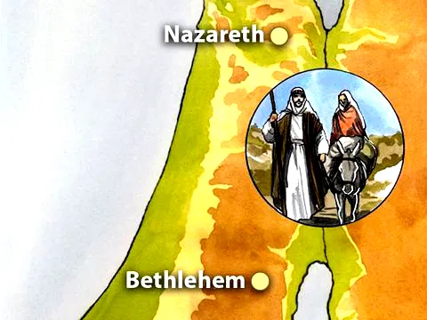
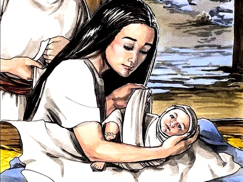

O Nascimento de Jesus
Referência Bíblica: Lucas 2:7
Já imaginou como foi o primeiro Natal? Jesus o Salvador eterno desceu dos céus e veio até nós, porque nos ama muito. Mas como será que isso aconteceu? Será que veio voando como um super herói? Ou apareceu de repente na terra? Vamos ver como é que Ele chegou aqui para nos salvar? Deus amou tanto o mundo que enviou Seu próprio Filho para vir aqui nos ajudar. No Seu plano, Ele escolheu uma moça chamada Maria, para ser a mãe de Jesus. Maria ainda não era casada. Ela ficou grávida, de forma milagrosa, através do Espírito Santo. Maria tinha um noivo chamado José, um rapaz que também confiava em Deus. Pouco antes de ganhar o bebê, eles tiveram que fazer uma viagem até Belém, a sua cidade natal.
Mas nesse mesmo tempo estava chegando a hora do bebê Jesus nascer. Naquele tempo não haviam tantos hospitais, como hoje em dia. Eles procuraram um lugar onde poderiam ficar hospedados mas a cidade estava cheia, não havia lugar na hospedaria (era uma espécie de hotel ou pousada)... Talvez até tivessem procurado uma casa, alguém que os recebessem num lugar mais confortável para estarem com o neném... Mas, não conseguiram nada! O único lugar que encontraram para ficar com o bebê Jesus foi num curral. Esse lugar, também chamado de estábulo ou estrebaria, é onde os animais da fazenda vão para comer, beber água e descansar. Maria teve o bebê ali, envolveu-o em alguns panos e o colocou para dormir numa manjedoura (cocho) bem quentinho.
Apesar de toda simplicidade, foi um acontecimento maravilhoso para todo o mundo: Jesus Cristo, o Salvador do mundo tinha nascido! Anjos cantavam nos céus:
"Glória a Deus nas alturas, e paz na terra aos homens aos quais ele concede o seu favor".
Lucas 2:14
O bebê Jesus recebeu algumas visitas: alguns pastores que ouviram os anjos e alguns magos. Uma grande estrela brilhante, surgiu no céu e conduziu os magos num longo caminho, do oriente até o lugar onde Jesus estava. Eles foram lá para adorar Jesus e lhe entregar presentes! Assim foi o 1º Natal! Jesus trouxe vida, paz e luz ao mundo, através da esperança de Salvação...
Moral da História
Jesus nasceu para ajudar todas as pessoas! O mundo estava totalmente escuro e triste, longe de Deus, por causa dos erros e maldade de todos. Mas Deus nos amou tanto, tanto que enviou Seu Filho Jesus para trazer luz e ajudar-nos a fazer o bem e acertar o caminho certo. Assim, todos que acreditam em Jesus podem se transformar em pessoas melhores e escaparem do castigo final. Dê lugar a Ele no seu coração! Ele é o maior presente do mundo... Jesus é a maior riqueza do universo!